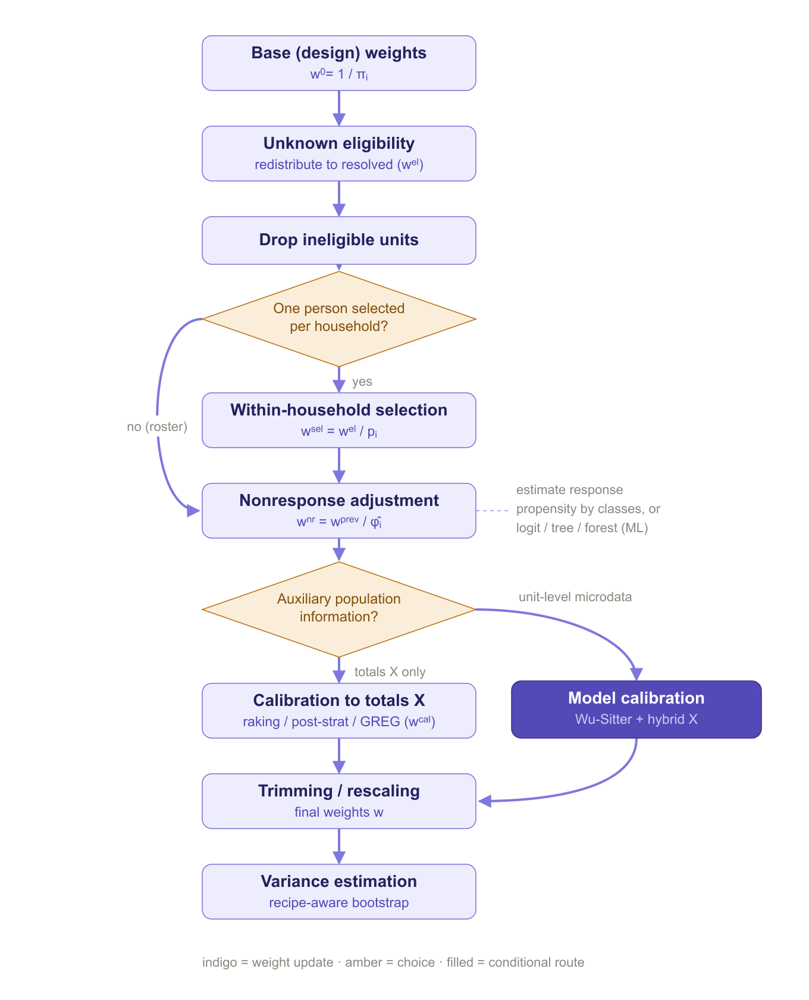

Declarative, pipeable survey weighting in base R — from design weights to calibrated, model-assisted, variance-ready weights.
weightflow builds survey weights by chaining hierarchical adjustments with a tidymodels-style API, and estimates their variances with a bootstrap that re-applies the whole recipe on each replicate. It has no hard dependencies (base R, R >= 4.1) and bridges to survey/srvyr for design-based inference.
Where does it fit? survey and srvyr are the standard tools for analysing data once you already have weights. weightflow sits one step earlier: it builds those weights from the design base weights, making every adjustment (eligibility, nonresponse, calibration, trimming) an explicit, auditable step, and then hands the result to survey/srvyr for inference.
What makes weightflow different
- A weighting recipe, not a black box. The whole process — eligibility, selection, nonresponse, calibration, trimming — is one explicit, auditable, pipeable object that you read top to bottom.
- Flexible engines for nonresponse and outcome models. Response propensities and model-calibration outcomes can be fitted with logistic regression, CART, random forest or gradient boosting (xgboost) — same API, swap one argument.
- Cross-fitting to tame overfitting. Flexible learners can overfit the propensity and blow up the weights; optional k-fold cross-fitting estimates each unit out-of-sample, with folds formed by cluster so there is no leakage.
- Calibration that controls extreme weights. Beyond raking, post-stratification and GREG, ridge (penalized) calibration relaxes the targets to keep weights stable when there are many auxiliaries.
- Principled trimming. The usual far-out fence, plus Potter’s MSE-optimal cutoff, chosen from the data instead of by hand.
- Recipe-aware variance. The bootstrap re-applies every step on each replicate, so the standard errors carry the variability of the whole cascade.
Note. Gradient boosting, cross-fitting, ridge calibration and Potter trimming are available in the development version (this repository) and are coming to CRAN in the next release. Install from GitHub to use them today.
How it works
weightflow expresses the whole weighting process as a sequence of explicit steps. The diagram below summarizes the flow and the choices that depend on the design and on the available auxiliary information.

Installation
# From CRAN
install.packages("weightflow")
# Development version (adds boosting, cross-fitting, ridge and Potter)
# install.packages("remotes")
remotes::install_github("jpferreira33/weightflow")The idea
A recipe is inert: building it computes nothing. prep() walks the steps in order and estimates the cascade of factors; collect_weights() extracts the final weights. Separating define from apply makes the whole process reproducible and auditable, and it is exactly what lets the bootstrap re-run the entire cascade per replicate.
library(weightflow)
recipe <- weighting_spec(sample_one, base_weights = pw) |>
step_unknown_eligibility(unknown = unknown_elig, by = "region") |>
step_drop_ineligible(ineligible = ineligible) |>
# household nonresponse: the whole dwelling is lost (no roster), so the
# adjustment is at the household level and uses only frame information
step_nonresponse(respondent = hh_responded, method = "weighting_class",
by = "region", cluster = "household_id") |>
step_select_within(prob = p_within) |>
# person nonresponse: among the selected persons, the roster gives sex and age
# even for those who did not respond, so a propensity model can use them
step_nonresponse(respondent = responded, method = "propensity",
formula = ~ region + sex + age, engine = "logit",
num_classes = 10) |>
step_calibrate(method = "raking",
margins = list(region = c(table(population$region)),
sex = c(table(population$sex)))) |>
step_trim_weights() |>
step_assert(max_deff = 3)
fitted <- prep(recipe) # estimate the cascade
summary(fitted) # per-stage diagnostics + Kish deff
wts <- collect_weights(fitted) # data.frame with .weightA worked example on real data
The article A full weighting pipeline on a real household survey (ECH 2019) runs the whole workflow on open microdata from Uruguay’s continuous household survey: it induces realistic eligibility and nonresponse, weights the survivors back with integrated household calibration, validates the poverty-rate estimate against a known truth, and attaches design-based confidence intervals with the bootstrap.
Highlights
The methods below are what set weightflow apart. Each is opt-in: the defaults reproduce classic survey weighting, and one argument switches the method on.
Machine-learning propensities (xgboost)
Estimate the response propensity with gradient boosting instead of logistic regression — useful when nonresponse depends on the covariates in nonlinear or interacting ways. The engine also drives the outcome models in step_model_calibration().
step_nonresponse(respondent = responded, method = "propensity",
formula = ~ region + sex + age, engine = "boost")Cross-fitting (k-fold)
A flexible learner that predicts the same units it trained on overfits the propensity, which inflates the weights and the variance. Cross-fitting estimates each unit from a model trained on the other folds; folds are formed by cluster when a cluster is set, so household members never leak across folds.
step_nonresponse(respondent = responded, method = "propensity",
formula = ~ region + sex + age, engine = "boost",
crossfit = 5, crossfit_seed = 1)In practice this is the difference between a stable adjustment and one dominated by a few extreme weights: on the bundled data, boosting without cross-fitting drives the design effect to ~2.4, while cross-fitting keeps it near 1.5.
Ridge (penalized) calibration
When you calibrate to many margins, forcing every constraint exactly can produce extreme weights. Ridge calibration relaxes the targets in a controlled way — a single, scale-free penalty trades a little accuracy on the totals for much steadier weights.
step_calibrate(method = "linear", formula = ~ region + sex,
totals = pop_totals, penalty = 1) # smaller = more relaxationPotter (MSE-optimal) trimming
Instead of a hand-picked cutoff, choose the trimming threshold that minimizes an estimate of bias^2 + variance (Potter 1990), balancing the bias of trimming against the variance from extreme weights.
step_trim_weights(method = "potter")What it does
Adjustment steps, applied in the order you pipe them:
| Step | What it does |
|---|---|
step_unknown_eligibility() |
Redistribute unknown-eligibility cases among the known ones (person- or household-level via cluster). |
step_drop_ineligible() |
Zero out out-of-scope units. |
step_select_within() |
Within-household selection (unequal prob or equal n_eligible). |
step_nonresponse() |
Weighting classes or propensity (logit / CART / random forest / xgboost), with optional k-fold cross-fitting, person- or household-level. |
step_calibrate() |
Raking, post-stratification, linear/GREG; bounded (Deville-Särndal), integrative (one weight per household), and ridge (penalized) options. |
step_model_calibration() |
Wu-Sitter model calibration with working models for the outcomes (any engine, with cross-fitting). |
step_trim(), step_trim_weights()
|
Manual or automatic trimming (Tukey fence or Potter MSE-optimal), insertable anywhere. |
step_round(), step_rescale()
|
Integer rounding and rescaling to a size or total. |
step_assert() |
Quality checkpoint on deff, weight ratio or effective n. |
Eligibility and response accept 0/1 dummy columns or any logical condition.
Diagnostics and reporting: summary() and plot() show the per-stage cascade with the Kish design effect (deff = 1 + CV^2) and effective sample size; weight_factors() returns the per-unit, per-step factors; report_weighting() writes a self-contained HTML report — pipeline diagram, variables used, per-stage summaries and per-step visuals — with no graphics device or server required.
Variance estimation (see the Variance estimation article). Once the weights are built, get design-based standard errors with a bootstrap that re-runs the whole recipe on each replicate:
boot <- bootstrap_weights(recipe, replicates = 500, strata = "region", psu = "psu")
boot_mean(boot, "income") # estimate, SE and 95% CI
# hand the replicate weights to survey / srvyr for the rest of the analysis
rep_design <- as_svrepdesign(boot) # a svyrep.design object
collect_replicate_weights(boot) # replicate weights as a data.frameThe bootstrap resamples PSUs within strata (Rao-Wu rescaling) and then re-applies the entire cascade (eligibility, nonresponse, calibration, trimming) on each replicate. So the replicate weights carry two sources of variability at once: the sampling design (the resampling of PSUs within strata) and every weighting adjustment (each one is re-estimated on each replicate). Re-running the full recipe per replicate is automatic here, rather than something you re-orchestrate by hand on top of the replicate weights, and the result plugs straight into survey/srvyr through as_svrepdesign() for any downstream estimator.
Example data
Three bundled datasets: population (the frame), sample_survey (take-all roster) and sample_one (multistage select-one design), all with stratum, PSU and design weight, so the full pipeline and the variance methods run natively.
Extending
apply_step() is the internal S3 generic behind each step. To add an adjustment, define a step_*() constructor (inert) and its apply_step.<class>() method — nothing else changes.
References
General framework
- Valliant, R., Dever, J. A., & Kreuter, F. (2018). Practical Tools for Designing and Weighting Survey Samples (2nd ed.). Springer.
- Sarndal, C.-E., Swensson, B., & Wretman, J. (1992). Model Assisted Survey Sampling. Springer.
Nonresponse and machine-learning propensities
- Sarndal, C.-E., & Lundstrom, S. (2005). Estimation in Surveys with Nonresponse. Wiley.
- Little, R. J. A. (1986). Survey nonresponse adjustments for estimates of means. International Statistical Review, 54(2), 139–157.
- Breidt, F. J., & Opsomer, J. D. (2017). Model-assisted survey estimation with modern prediction techniques. Statistical Science, 32(2), 190–205.
- Chernozhukov, V., et al. (2018). Double/debiased machine learning for treatment and structural parameters. The Econometrics Journal, 21(1), C1–C68. — cross-fitting.
Calibration
- Deville, J.-C., & Sarndal, C.-E. (1992). Calibration estimators in survey sampling. JASA, 87(418), 376–382.
- Deville, J.-C., Sarndal, C.-E., & Sautory, O. (1993). Generalized raking procedures in survey sampling. JASA, 88(423), 1013–1020.
- Deming, W. E., & Stephan, F. F. (1940). On a least squares adjustment of a sampled frequency table. Annals of Mathematical Statistics, 11(4), 427–444.
- Lemaitre, G., & Dufour, J. (1987). An integrated method for weighting persons and families. Survey Methodology, 13(2), 199–207.
- Wu, C., & Sitter, R. R. (2001). A model-calibration approach to using complete auxiliary information from survey data. JASA, 96(453), 185–193.
- Bardsley, P., & Chambers, R. L. (1984). Multipurpose estimation from unbalanced samples. Applied Statistics, 33(3), 290–299. — ridge calibration.
Design effect and trimming
- Kish, L. (1965). Survey Sampling. Wiley. — and Kish, L. (1992). Weighting for unequal Pi. Journal of Official Statistics, 8(2), 183–200.
- Potter, F. J. (1990). A study of procedures to identify and trim extreme sample weights. Proc. ASA Survey Research Methods Section, 225–230.
- Potter, F., & Zheng, Y. (2015). Methods and issues in trimming extreme weights in sample surveys. Proc. ASA Survey Research Methods Section.
Variance estimation
- Rao, J. N. K., & Wu, C. F. J. (1988). Resampling inference with complex survey data. JASA, 83(401), 231–241.
- Rao, J. N. K., Wu, C. F. J., & Yue, K. (1992). Some recent work on resampling methods for complex surveys. Survey Methodology, 18(2), 209–217.
- Preston, J. (2009). Rescaled bootstrap for stratified multistage sampling. Survey Methodology, 35(2), 227–234.
- Wolter, K. M. (2007). Introduction to Variance Estimation (2nd ed.). Springer.
- Lumley, T. (2010). Complex Surveys: A Guide to Analysis Using R. Wiley.